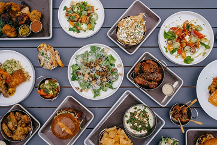
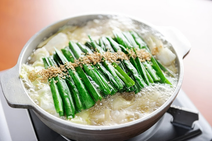

TASTING HIGHLIGHT
春韻序章
盤藝石法香氣馬告與山胡椒高湯，開啟春日細膩的海口香氣。
食材來源｜基隆崁仔頂魚市 · 花蓮馬告部落

TASTING HIGHLIGHT
山海漫步
烏骨雞、香菇與雲霧煙燻的層次，連結山林與海洋的香氣。
食材來源｜苗栗信義鄉香菇農場

TASTING HIGHLIGHT
焙火終曲
穀物和牛與烏魚子煙蕾勾勒的深邃香氣，以柑橘清香收尾。
食材來源｜雲林口湖漁村 · 彰化肉品市場